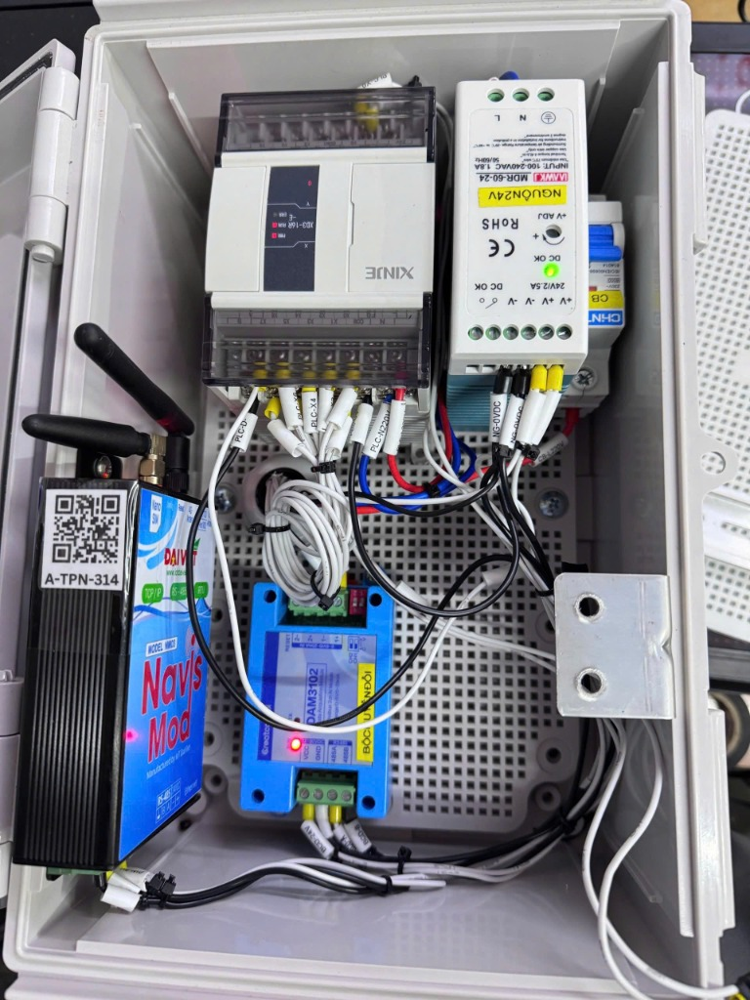

Hướng Dẫn Test Tủ Giám Sát EC-IoT
CB Bảo vệ
CHINT (cắt/đóng nguồn 220VAC)
Nguồn
Meanwell 24VDC 2.5A
PLC
XINJE XD3 (220V, PNP Input)
Gateway IoT
NavisMod NM03 (Modbus Master, 4G)
Bộ chuyển đổi Analog
DAM3102 (4-20mA → Modbus)
⚙️ Nguyên lý hoạt động
Đây là tủ giám sát các tín hiệu của máy RO (hệ thống lọc nước thẩm thấu ngược). Gateway NavisMod NM03 đóng vai trò Modbus Master, giao tiếp qua RS485 để:
- Đọc PLC XINJE (Modbus Slave) → giám sát 8 tín hiệu ON/OFF (bơm, công tắc, phao, alarm)
- Đọc DAM3102 (Modbus Slave) → giám sát cảm biến EC (4-20mA → giá trị µS/cm)
Dữ liệu được Gateway đẩy lên Cloud qua 4G → hiển thị trên App IoT theo thời gian thực.

Tủ EC-IoT nhận nguồn 220VAC, chuyển đổi ra 24VDC và xuất ra ngoài gồm: 8 tín hiệu ON/OFF (digital) và 1 tín hiệu EC analog (4-20mA). PLC đấu kiểu PNP — test bằng cách đưa đầu dây +24VDC (output từ tủ) chạm vào đầu cos tag tương ứng.
| STT | Tag Name | Loại | Mô tả | Nhóm trên IoT |
|---|---|---|---|---|
| 1 | Bơm RO1,2 | Digital | Trạng thái bơm RO 1,2 | Trạng Thái Bơm |
| 2 | Bơm RO3,4 | Digital | Trạng thái bơm RO 3,4 | Trạng Thái Bơm |
| 3 | Áp cao | Digital | Công tắc áp suất cao | Trạng Thái Công Tắc |
| 4 | Áp thấp | Digital | Công tắc áp suất thấp | Trạng Thái Công Tắc |
| 5 | Bồn TG Đầy | Digital | Phao bồn trung gian đầy | Trạng Thái Bồn |
| 6 | Bồn TG Cạn | Digital | Phao bồn trung gian cạn | Trạng Thái Bồn |
| 7 | EC High Alarm | Digital | Cảnh báo EC vượt ngưỡng | Alarm |
| 8 | Phát hiện rò rỉ nước | Digital | Cảm biến phát hiện rò rỉ | Alarm |
| 9 | EC (µS/cm) | Analog | Giá trị EC từ cảm biến (4-20mA) | Sensor |


Đo kiểm tra điện trước khi cấp nguồn
Dùng đồng hồ VOM kiểm tra đảm bảo:
- Dây 220VAC (Nóng - Nguội) đo phải đúng điện áp
- Dây 24VDC output không bị chập, không hở mạch
- 220VAC và 24VDC không được chập nhau — kiểm tra cách điện giữa 2 hệ thống nguồn
- PHẢI kiểm tra tránh chập trước khi cấp nguồn!
Quấn keo cách điện dây 0V nguồn 24VDC
Lấy keo cách điện quấn kín đầu dây 0V (GND) của nguồn 24VDC:
- Xác định dây 0V đầu ra của nguồn CHNT MDR-60-24 (cực âm, dây màu đen/xanh)
- Quấn keo cách điện chặt quanh đầu cos/đầu nối dây 0V
- Mục đích: Khi cấp nguồn, 2 đầu +24V và 0V không được chạm nhau
Cấp điện 220VAC cho tủ
Cắm phích điện 220VAC vào tủ và kiểm tra:
- Đèn DC OK trên nguồn CHNT sáng xanh → Nguồn 24V OK
- PLC XINJE khởi động, đèn RUN sáng (nếu đã có chương trình)
- Gateway NavisMod NM03 có đèn LED sáng
- Module DAM3102 có đèn báo nguồn
Nạp chương trình PLC
Kết nối máy tính với PLC XINJE qua cáp lập trình:
- Mở phần mềm XDPPro trên máy tính
- Chọn đúng model PLC (VD: XD3-16T-E)
- Nạp chương trình (file .xdp) vào PLC
- Kiểm tra PLC chuyển sang chế độ RUN sau khi nạp xong
Cắm SIM 4G cho Gateway
Lắp SIM 4G (đã có gói data) vào khe SIM trên Gateway NavisMod NM03:
- Tắt nguồn gateway trước khi cắm SIM (hoặc cắm khi tủ chưa cấp nguồn)
- Đẩy SIM vào đúng chiều, đảm bảo khớp khe
- Cấp lại nguồn, đợi Gateway kết nối mạng (đèn mạng nhấp nháy → sáng đều)
Dán & Scan mã QR — Bắt đầu test
Dán mã QR lên tủ và sử dụng App IoT trên điện thoại để quét:
- Dán nhãn mã QR (VD: A-TPN-314) lên mặt trước tủ
- Mở App IoT → Scan mã QR
- Xác nhận thiết bị hiển thị đúng trên giao diện App (tên trạm, mã tủ)
- Kiểm tra trạng thái kết nối: ● Hoạt động
Test 8 tín hiệu Digital Input (ON/OFF)
Kiểm tra từng tín hiệu bằng cách chạm đầu +24V vào đầu cos tag tương ứng:
Thực hiện lần lượt cho từng tag:
Cho mỗi tag, kiểm tra:
- Chạm +24V vào đầu cos tag → Đèn input PLC sáng
- Trên App IoT → Trạng thái tương ứng chuyển ON (sáng xanh ✅)
- Tháo dây +24V ra → Trạng thái trên IoT chuyển về OFF (xám)
- Đúng tên tag trên App khớp với tên đầu cos
Test tín hiệu Analog EC
Kiểm tra tín hiệu EC analog (4-20mA) hiển thị lên App IoT:
✅ Cách 1: Dùng cảm biến EC thật
- Kết nối cảm biến EC vào module DAM3102 (đúng cực +/-)
- Nhúng đầu cảm biến vào nước
- Theo dõi giá trị EC (µS/cm) trên App IoT → phải thay đổi (nhảy số)
- Thử nhúng vào nước có muối để thấy giá trị EC tăng
🔧 Cách 2: Dùng bộ giả lập Analog 4-20mA (khi không có cảm biến EC)
Sử dụng bộ phát tín hiệu dòng JS-VISG-M-S (Voltage & Current Signal Generator) — loại 2 dây analog riêng.

Sơ đồ đấu nối bộ giả lập (loại 2 dây):
┌──────────────────────┐ ┌──────────────────────┐ │ BỘ GIẢ LẬP │ │ MODULE DAM3102 │ │ JS-VISG-M-S │ │ (Analog Input) │ │ │ │ │ │ AIo (Analog Out) ●──┼───┼──● 1+ (Input +) │ │ GND (Mass) ●──┼───┼──● 1- (Input -) │ │ │ │ │ └──────────────────────┘ └──────────────────────┘ ⚙️ Cài đặt bộ giả lập: • Chuyển MODE → Current (dòng điện mA) • Vặn núm xoay để thay đổi giá trị 4mA → 20mA • 4mA = giá trị EC thấp nhất (0 µS/cm) • 20mA = giá trị EC cao nhất (full scale)
- Bật bộ giả lập (công tắc ON), chọn chế độ Current (dòng mA)
- Đấu 2 dây ra dòng từ bộ giả lập vào input AI+/AI- của DAM3102
- Vặn núm xoay từ 4mA → 20mA từ từ
- Quan sát trên App IoT: giá trị EC (µS/cm) phải nhảy số tương ứng
- Test ở các mức: 4mA (min), 12mA (giữa), 20mA (max)
Kết thúc test — Tháo SIM
Sau khi hoàn tất tất cả các bước test:
- Xác nhận tất cả 8 tín hiệu digital đều khớp trên IoT
- Xác nhận giá trị EC analog nhảy số đúng trên IoT
- Tháo SIM 4G ra khỏi Gateway (để dành cho tủ tiếp theo)
- Ngắt nguồn 220VAC
- Ghi chú kết quả test: PASS ✅ hoặc FAIL ❌ (kèm lỗi)
| STT | Hạng mục kiểm tra | Kết quả | Ghi chú |
|---|---|---|---|
| 1 | Đo điện 220V / 24V không chập | ☐ Đạt | |
| 2 | Quấn keo dây 0V | ☐ Đạt | |
| 3 | Cấp nguồn 220V — PLC + Gateway sáng đèn | ☐ Đạt | |
| 4 | Nạp code PLC thành công | ☐ Đạt | |
| 5 | Cắm SIM — Gateway kết nối mạng | ☐ Đạt | |
| 6 | Scan QR — Hiện trạng thái "Hoạt động" | ☐ Đạt | |
| 7a | Bơm RO1,2 — Khớp trên IoT | ☐ Đạt | |
| 7b | Bơm RO3,4 — Khớp trên IoT | ☐ Đạt | |
| 7c | Áp cao — Khớp trên IoT | ☐ Đạt | |
| 7d | Áp thấp — Khớp trên IoT | ☐ Đạt | |
| 7e | Bồn TG Đầy — Khớp trên IoT | ☐ Đạt | |
| 7f | Bồn TG Cạn — Khớp trên IoT | ☐ Đạt | |
| 7g | EC High Alarm — Khớp trên IoT | ☐ Đạt | |
| 7h | Phát hiện rò rỉ nước — Khớp trên IoT | ☐ Đạt | |
| 8 | EC Analog — Giá trị nhảy trên IoT | ☐ Đạt | CB thật / Giả lập 4-20mA |
| 9 | Tháo SIM, ngắt nguồn | ☐ Đạt |
Người test:
Ngày test:
Kết luận: